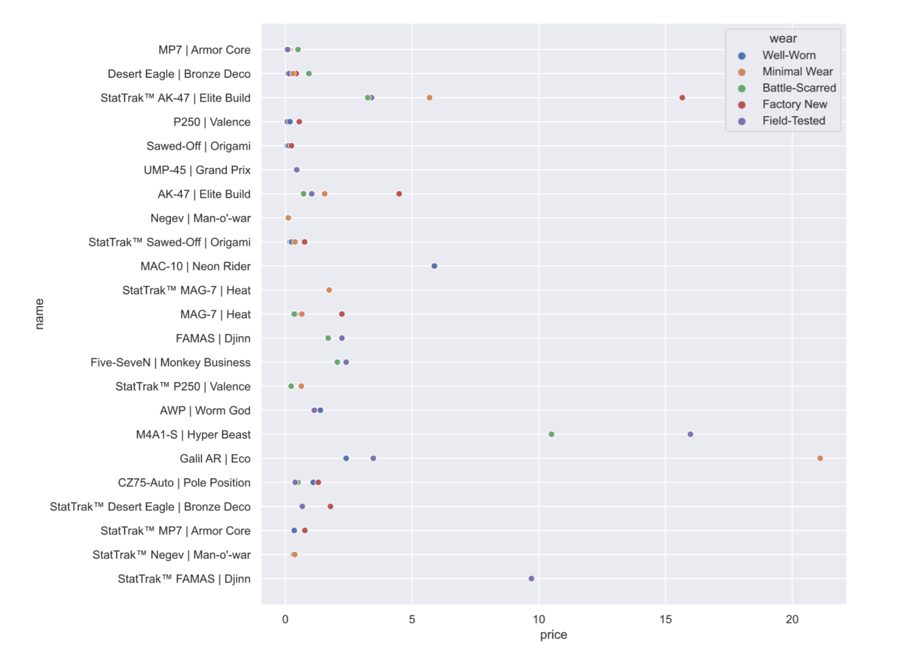

Contained here are my projects relating to Data Science
Louvain Networks with Spotify's API
This project was done in collaboration with Logan Griffin and Will Betts Cope. The goal of the project was to analyze the various music qualities in Spotify's API through the use of Louvain networks. Our Encoding Music class created playlists, which we then used as a dataset for analysis. Here we have binned qualities such as energy, speechiness, valence, loudness, and liveness to connect songs from our playlists. You can see the interactive network above.
Analysis of Cases and Weapons in Counter-Strike: Global Offensive
This project was a collaboration with James Simbolon for our Data Science Final. We analyzed different qualities of weapons and cases in the Game Counter-Strike: Global Offensive. For the Full Project and report, visit the Github page: https://github.com/Jsimb174387/case-analysis